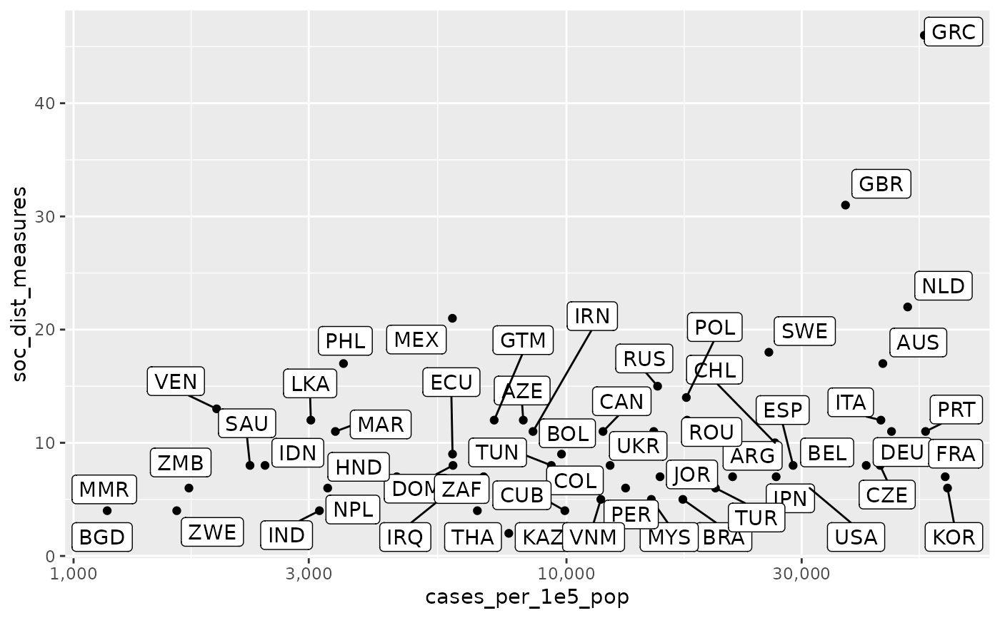

download_merged_data.RdMerges data from the Johns Hopkins University CSSE team on the spread of the
SARS-CoV-2 virus and the Covid-19 pandemic
(https://github.com/CSSEGISandData/COVID-19),
case data provided by the ECDC
(https://www.ecdc.europa.eu/en/publications-data/download-todays-data-geographic-distribution-covid-19-cases-worldwide),
the ACAPS governmental measures database
(https://www.acaps.org/covid19-government-measures-dataset),
Mobility Trends Reports provided by Apple related to Covid-19
(https://www.apple.com/covid19/mobility),
Google COVID-19 Community Mobility Reports
(https://www.google.com/covid19/mobility/),
Google Trends Covid-19 related search volume
(https://trends.google.com/trends/), and the World Bank
(https://data.worldbank.org) intro a country-day data frame.
Variable definitions are provided by the data frame
tidycovid19_variable_definitions.
download_merged_data( wbank_vars = c("SP.POP.TOTL", "AG.LND.TOTL.K2", "EN.POP.DNST", "EN.URB.LCTY", "SP.DYN.LE00.IN", "NY.GDP.PCAP.KD"), wbank_labels = c("population", "land_area_skm", "pop_density", "pop_largest_city", "life_expectancy", "gdp_capita"), search_term = "coronavirus", silent = FALSE, cached = FALSE )
| wbank_vars | Specify the World Bank data items that you want to retrieve. |
|---|---|
| wbank_labels | Give somewhat more informative World Bank variable names
for the output data frame. Has to match the length of |
| search_term | Google Trends serch term. Defaults to "coronavirus". |
| silent | Whether you want the function to send some status messages to
the console. Might be informative as downloading will take some time
and thus defaults to |
| cached | Whether you want to download the cached version of the data
from the tidycovid19 Github repository instead of retrieving the
data from the authorative source. Downloading the cached version is
faster and the cache is updated daily. Defaults to |
A data frame containing the data, organized by country and date. It
includes a timestamp variable indicating the time of data
retrieval.
See the documentation of the separate download functions of the package for more detail.
df <- download_merged_data(silent = TRUE, cached = TRUE) df %>% dplyr::group_by(iso3c) %>% dplyr::summarise( confirmed_cases = max(confirmed, na.rm = TRUE), soc_dist_measures = max(soc_dist) ) %>% dplyr::filter(confirmed_cases >= 1000) %>% ggplot2::ggplot(df, mapping = ggplot2::aes(x = confirmed_cases, y = soc_dist_measures)) + ggplot2::geom_point() + ggrepel::geom_label_repel(ggplot2::aes(label = iso3c)) + ggplot2::scale_x_continuous(trans='log10', labels = scales::comma)#> Warning: Removed 5 rows containing missing values (geom_point).#> Warning: Removed 5 rows containing missing values (geom_label_repel).